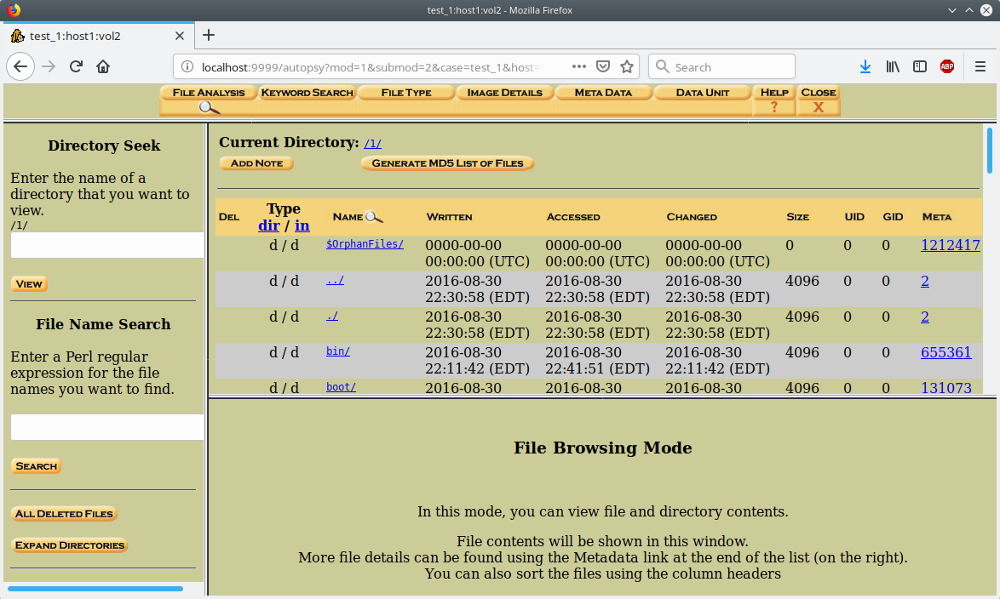
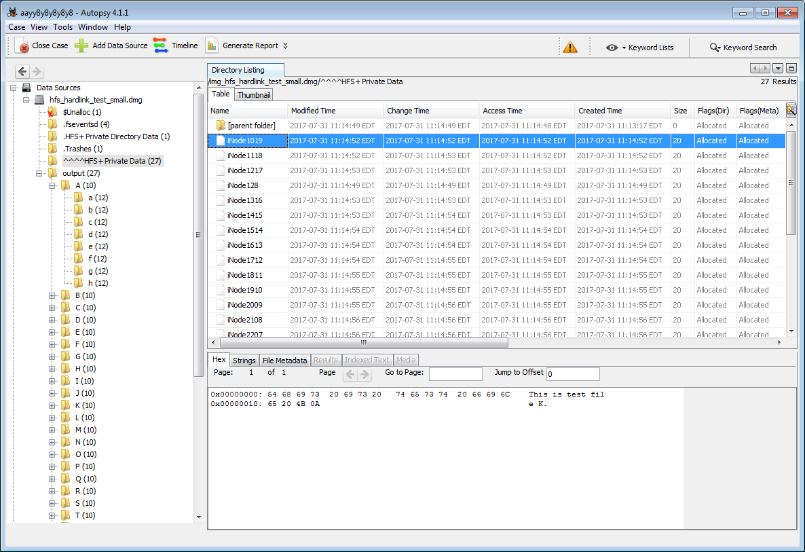

CS 3710
Introduction to Cybersecurity
Aaron Bloomfield (aaron@virginia.edu)
@github | ↑ | 
Digital Forensics
Introduction
Forensics
forensics (plural in form but singular or plural in construction): the application of scientific knowledge to legal problems
especially: scientific analysis of physical evidence (as from a crime scene)
What is a forensic science?
- It is any science that can be applied to the analysis of an accident or crime scene
- Formally, it is any science applied to criminal and civil laws
- (some of the examples on the following slides are from here)
Forensic science: Pathology

- How did the person die?
- This includes:
- cause of death
- drugs, poisons, alcohol in blood
- manner of death
- performing an autopsy
Forensic science: Anthropology

- For skeletal remains:
- are they human?
- if so, what is the age, sex, race?
- any injuries to the bones?
- facial reconstruction based on the skull
Forensic science: Odontology

- Odontology == dentistry
- Identify remains based on dental records
- Match a suspect to a bite mark injury
Forensic science: Engineering

- Typically for mechanical or structural issues or accidents
- Why did it fail?
- For traffic accidents, reconstruction of the accident
Forensic science: Entomology

- Entomology is the study of insects
- Many insects lay eggs in decaying flesh
- But different insects do this at different times
- By studying the insect eggs in a corpse, the time since death can be estimated
Forensic science: Biology

- DNA tests, typically of DNA-based evidence
- Blood on the victim, or semen in the case of rapes
- Even flesh under the fingernails of a victim
And many other fields
- Art history: to determine art forgeries
- Chemistry: illegal drug analysis
- Geology: evidence in soils, etc.
- And, of course, computer science
- See a full list on Wikipedia’s Forensic science page
Background
Stages
- Acquisition of evidence
- Imaging a hard drive or USB key, often via a “write-blocker”
- One is $389 on Amazon
- And others…
- Analysis
- The real work here…
- Report
- Often must hold up in court!
Evidence acquisition
- Most common is to image a hard drive or USB key
- Technically, this is media forensics
- Other possibilities:
- Physical evidence of the computer/media
- Recording network packets
- Social media account analysis
- Use of “cloud” services, including smart speakers
- We will primarily focus on drive images
History
- 1980’s: specialized groups of individuals who did this type of analysis
- 1990’s: more national groups, growth of the field, initial tools
- 2000’s: better tools, guidelines, related laws and court rulings, training initiatives
- 2010’s: better AI in tools, use of cloud, better virtualization options
Motivating example
- A corporate exec named Tony is working on a new technology “X”
- He leaves to join a competing company
- Suddenly, that company has made a lot of advancements in technology “X”
- Did Tony leave with any documents from your company?
- How could you tell?
This really happened
- In January 2016, Anthony Levandowski left Google’s self driving car unit
- Was immediately hired as head of Otto’s self driving car unit
- Otto was later acquired by Uber
- Was immediately hired as head of Otto’s self driving car unit
- Google sued Uber
- Case was settled for $245 million in early 2018
Background: filesystems
- Filesystems keep the file contents and also the metadata
- Timestamps, owners, permissions, file type, etc.
- Plus the directory structure
- When a file is deleted, typically only the directory entry is removed
- The blocks that the file took up are marked as available, but are not wiped
Techniques
Deleted file recovery
- Undelete programs search hard drivers sectors for file blocks
- If the blocks have not been overwritten, then the file can be successfully restored
- Some times only parts can be recovered
- Secure delete programs can (often) solve this
- Linux: see next slide
Deleted file recovery (Linux)
- Under Linux, use testdisk or photorec
- Some programs, such as autopsy, cannot properly undelete files (we’ll see autopsy shortly)
- testdisk will be useful to find the file(s) to be undeleted, but cannot undelete them
- Use photorec for the undeletion itself – note that it undeletes all files, so you will need about 11 Gb of free space
- Then find the file(s) by their extension
Password protected files
- Various password crackers exist for many means of password protecting files
- Example: the .zip password cracker used in the Networks HW
- One can encrypt / decrypt files with AES as well:
openssl aes-256-cbc -a -salt -in input.txt -out input.txt.aesopenssl aes-256-cbc -d -a -salt -in input.txt.aes -out output.txt
Image search
- Some illegal activity involves images and videos
- Child porn, in particular
- While programs exist to find images that look like something else, a manual search is likely the most viable
- One can view a page of thumbnails to quickly search through an image library
- JPEG images also have EXIF data, which has textual information about the image
- exiftool and jhead are tools that can extract EXIF data
Keyword search
- Some OSes can do this from a file browser
- Windows Explorer, for example
- Others may require indexing the files
- Mac’s spotlight search is a good example of this
- Linux has baloo which is similar, for indexing
- Or
grepto find text within files
- Or
- Intelligent OSes & applications can read into .zip files, JPEG EXIF data, etc.
Browser history
- Not everybody uses
pornprivacy mode on their web browser - In-browser instructions are readily available
- This can be done by the command line as well
Browser cache
- All browsers support searching through this
- Firefox: view
about:cache - Chrome: various cache viewers exist
- Similarly for other browsers
- Firefox: view
- The files are also on the hard drive
- Windows/Chrome example:
C:\Users\User\AppData\Local\ Google\Chrome\User Data\Default\Cache
- Windows/Chrome example:
Email search
- Either a keyword or filesystem search, as above, or…
- Just loading up the email client and using that to search
- A legal warrant can also obtain information from the mail provider
Network connection search
- DNS entries are cached for a period of time
- Try running
ipconfig /displaydnsunder Windows, for example - This lists websites contacted
- Try running
- Many Linux distributions do not do DNS caching by default
- Ubuntu, in particular
Other places to look
- In the /tmp folder
- This is cleared upon boot, but not upon shutdown
- In the command history (likely ~/.bash_history)
- In databases on the drive
- You can also view the history of SQL commands, such as in .mysql_history
Barriers
Encrypted Drives
- A properly encrypted drive…
- … meaning a good cipher and a good password…
- … cannot reasonably be cracked
- “In October [2017], FBI Director Christopher Wray said that in an 11-month period, the FBI had been unable to extract data from more than 6,900 devices; that is over half of the devices it had attempted to unlock” (source)
Encrypted Drives
- If you have an encrypted hard drive, and the gov’t has a (valid) search warrant…
- You can’t refuse on 1st amendment (free speech) grounds
- Analogy: you can’t refuse to unlock a door on your house if the police have a (valid) search warrant based on free speech grounds
- Granted, they have battering rams…
Encrypted Drives
- What about the 5th amendment (can’t force self-incrimination)?
- This sometimes can work
- That amendment only applies to testimonials, not actions
- But is forcing you to decrypt your hard drive an action or a testimonial?
- That depends on the foregone conclusion doctrine
- If the gov’t already knows what is there (at the time of the attempted search!), then it’s an action; if not, it’s a testimonial
Foregone Conclusion Doctrine
- In USA vs. Fricosu (2012), the defendant was forced to decrypt
- Fricosu admitted on a recorded phone call that there was “stuff” on the machine
- In USA vs. Doe (2012), the defendant was not forced to decrypt
- The gov’t didn’t know what was there
- The court rejected the notion “that simply because the devices were encrypted necessarily means that Doe was trying to hide something”
- Sources: WaPo, EFF
Self-incrimination
- Courts have held that self-incrimination is the act of stating you are guilty
- Formally, a testimonial communication that is incriminating
- Using information about you does not qualify
- So the 5th amendment does not allow you to prevent biometric scans, fingerprint readers, etc.
- Source
Other use of encryption
- https blocks packet sniffing
- Tor prevents geolocation based on IP address
- And uses https
- Tor browsers do not cache files locally (or even write to disk)
Mobile device encryption
- You can configure your phone to delete everything unless a pass code is entered in the first 10 tries
- And encrypt it as well
- It is not viable to crack recent phones secured with this
FBI-Apple encryption dispute
- A phone from one of the shooters in the 2015 terrorist attack in San Bernardino, CA, that killed 14 people, used an iPhone 5C’s encryption
- The FBI wanted Apple to electronically sign software that would enable the FBI to unlock the phone
- Apple refused, and it went to court
FBI-Apple encryption dispute
- Note that the FBI was not asking Apple to unlock that one phone…
- … which is something that Apple had been helping law enforcement do for years (with a proper warrant)
- Instead, they wanted Apple to put in a backdoor that the FBI could use on any iPhone
- And without Apple’s knowledge or assistance
- Note that Apple was already helping them unlock the phone
FBI-Apple encryption dispute
- The FBI likely felt they had a weak case
- Right before the hearing, they delayed
- The reason: they found a third party that could do this for them
- By booting it into “debug mode” via a USB connection
- The reason: they found a third party that could do this for them
- Apple fixed this issue in the next release
- This case never went back to court
FBI-Apple encryption dispute
- The phone in question had no useful information, as it turned out
- Other court rulings have generally said that Apple can not be compelled to unlock an iPhone
- It has been opined that the reason is more financial than ethical for Apple in this case
System Analysis and Tools
Basic UNIX commands: strings
- Given a binary file, run
stringson that file to extract all ASCII strings in that file- By default, it’s all consecutive printable ASCII characters of length 4 or greater
- The -n option can change this:
Basic UNIX commands: grep
- Searches a file for text
- Case insensitive by adding -i
- All files not matching the string via -v
egrepuses regular expressions:
Basic UNIX commands: find
- Find files in sub-directories based on specific criteria, such as filename:
- That searches the root directory (
/) - or by file contents:
- Finds files (
-type f) and runsgrepon them to search forexamplewithin - That searches the current directory (
.)
Modern Forensics Tools
- There are lots of them out there
- A Google search for “top digital forensics tools” returns a lot of hits
- There are lots of free and open source tools
- Wikipedia even has an article listing many of these tools
Autopsy / Sleuth Kit
- The tool is Sleuth Kit, the GUI is Autopsy
- They are both open source
- Due to Java incompatabilities, and software rot, it does not seem to install properly under Linux
Old Autopsy / Sleuth Kit
Current Autopsy / Sleuth Kit
These recent versions have a Java GUI 
Other tools
- To find deleted files, try debugfs or testdisk or photorec
- I like the latter better, but your mileage may vary
- Sometimes they can recover files that autopsy cannot
- You can use equivalent undelete programs on other operating systems for the forensics HW
Case Studies
Some we’ve seen (or will see)
- The analysis of Stuxnet
- The FBI-Apple encryption dispute
- The Sony BMG rootkit fiasco from the rootkits slide set
Dennis Rader (2005)
- A serial killer on the run for 30 years, he killed at least 10 victims
- He killed again in 2005 in Kansas
- Sent a floppy disk to the police with a letter on it
- Because floppies can’t be traced
- A deleted Word file’s metadata showed that the last person to edit the file was “Dennis” with a link to the church where he was a deacon
- He is now in jail for life
Corey Melton (2005)
- His computer was infected by viruses, so he brought it into the Geek Squad at Best Buy
- They found it was a prolific infection, and the viruses were “re-attaching themselves to movies”
- I have no idea what that means, either
- Regardless, the Geek Squad looked at the movies, which were child porn
- He was arrested and served 10 years in jail
- Source
Ownership of Facebook (2010)
- Paul Ceglia sued Mark Zuckerberg, claiming that Paul hired Mark to develop “The Page Book” – which became facebook – and thus owned 50%
- The court allowed facebook to do forensic testing on Ceglia’s computer
- The findings:
- An original file of the contract had no mention of “The Page Book”
- An apparently forged .tif document of the contract was found
- The case was dismissed and Ceglia was arrested
- source

{kind=link}